cour artisanale
client : agglomération de samur
économiste : techniques et chantiers
fluides, thermiques, ssi : ab ingénierie
structure : even structures
accoustique : db acoustic
date : livraison été 2026
budget travaux : 3.4 M€
type : industrie
Implantée au pied de la levée séparant le quartier du Chemin-Vert des rives du Thouet, la cour artisanale de Saumur se déploie sur deux plateaux de 1 000 m², superposant, en relation directe avec l’espace public, des cellules dédiées à l’artisanat et, à l’étage, un plan libre à vocation tertiaire. Sans relever d’une logique de tabula rasa, le site s’inscrit néanmoins dans un contexte de transformations profondes : restructurations massives du parc de logements sociaux et démolition de barres jugées insalubres ont accompagné la mise en place d’une nouvelle infrastructure productive et le renouvellement de l’offre socio-culturelle. Porté par l’agglomération de Saumur et non par ses usagers futurs, le projet propose alors une infrastructure volontairement indéterminée, conçue pour opérer au sein de conditions économiques changeantes et des projections institutionnelles qui les accompagnent.
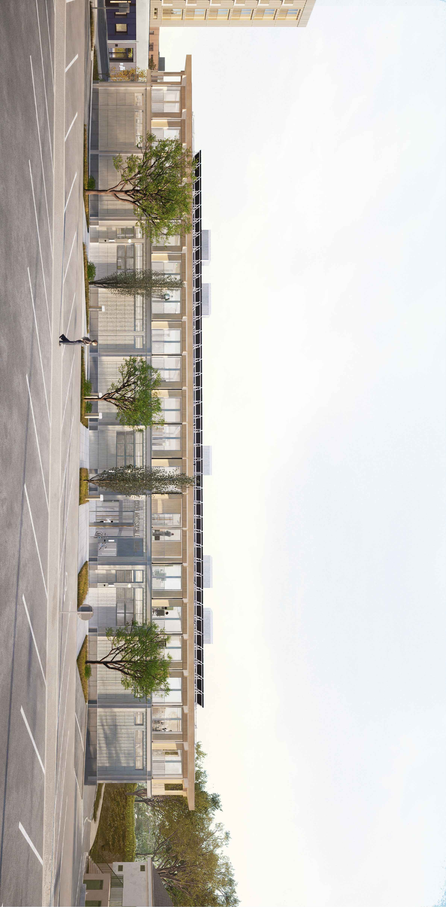
Les usages de la cour dépendant des preneurs futurs, le projet s’est largement inscrit dans un type de conception désormais assez répandu : celui de la réversibilité — du plan évolutif tel qu’énoncé dans les dossiers de programme — ou, dans un registre plus théorique, de l’abri souverain et du bâtiment sans contenu. Du cloisonnement non porteur aux multiples scénarios de subdivision en cellules jusqu’au tramage et dimensionnement des réseaux et équipements techniques, l’ensemble crée un dispositif censé pouvoir s’adapter à l’évolution du programme productif de la cour. La structure étant volontairement surdimensionnée, la seule modification véritablement lourde serait donc liée à une future surélévation.
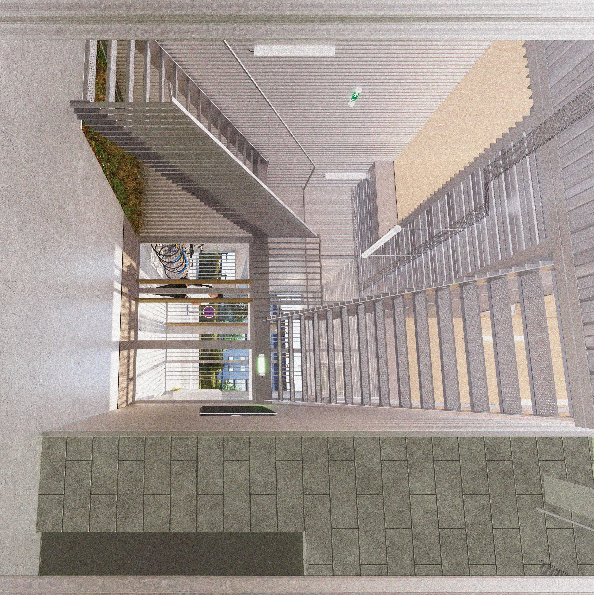
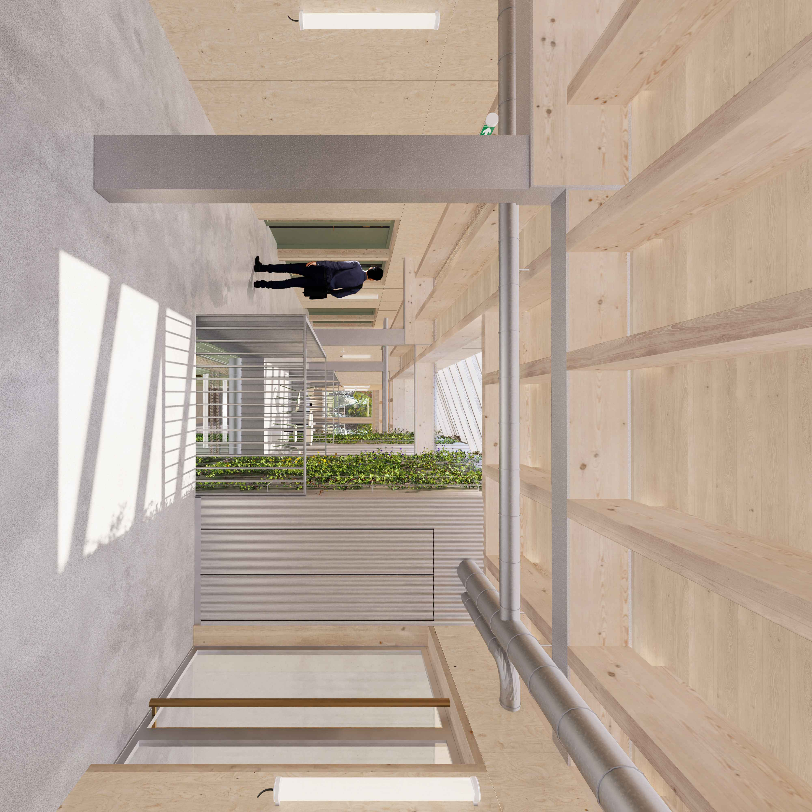
Le projet ne s’est cependant pas porté sur les seules prérogatives d’un pragmatisme fonctionnel. Afin d’éviter ce que le programme qualifiait d’effet caserne de pompiers, les éléments de rationalisation interne du bâtiment sont réinvestis dans une écriture extérieure autonome, répondant à la fois à des exigences formelles et bioclimatiques. Les portiques en profils métalliques galvanisés rythment la façade, produisent des portées d’ombre et rendent lisible la trame des ateliers, tandis que les montants en bois massif, à l’étage, dissimulent les descentes d’eaux pluviales tout en supportant les débords de toiture.
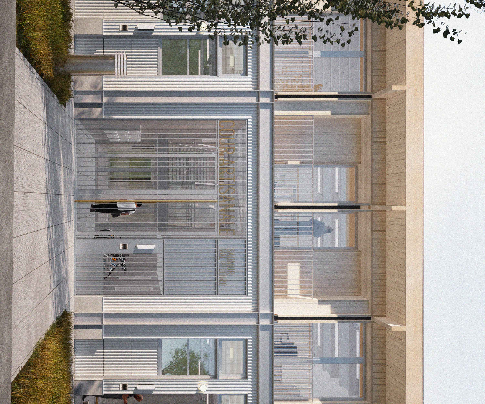
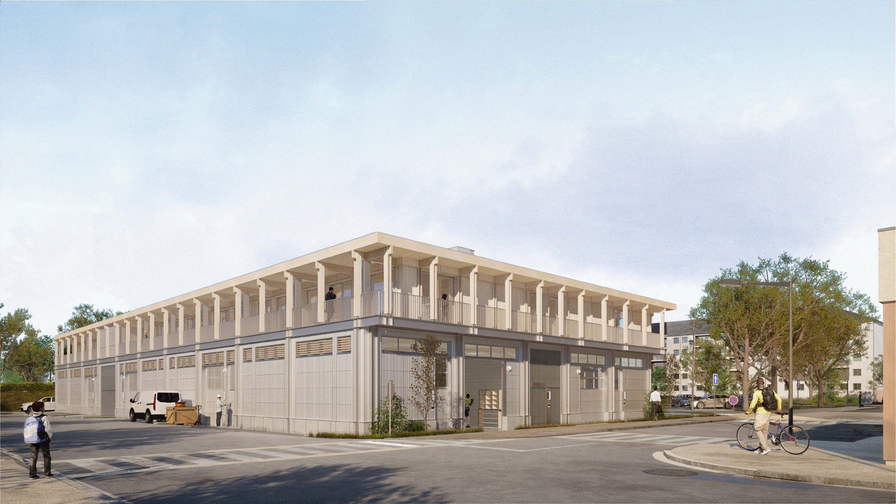
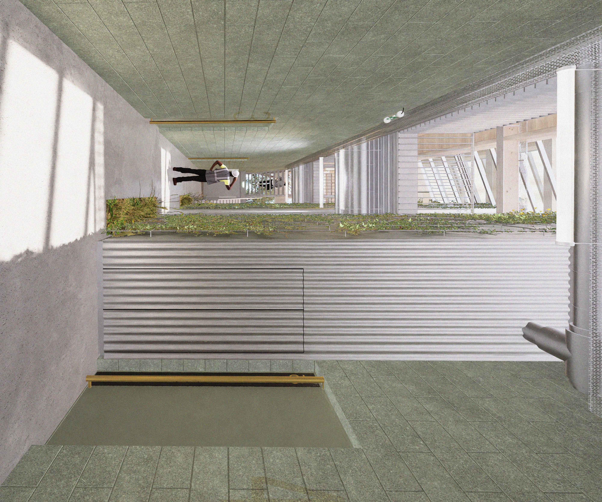
Aussi, afin d’éviter de réduire la cour à de simples plateformes habitées par des alignements de bureaux et d’ateliers, le projet s’organise autour d’une circulation centrale en croix, formant un vaste atrium reliant les deux niveaux. Cet espace se dilate pour neutraliser l’effet de couloir et ouvrir la porte à des occupations collectives tout en intégrant de grands conduits verticaux faisant office de cheminées solaires – elles-mêmes couplées à un puits climatique – permettant une ventilation naturelle de la cour.
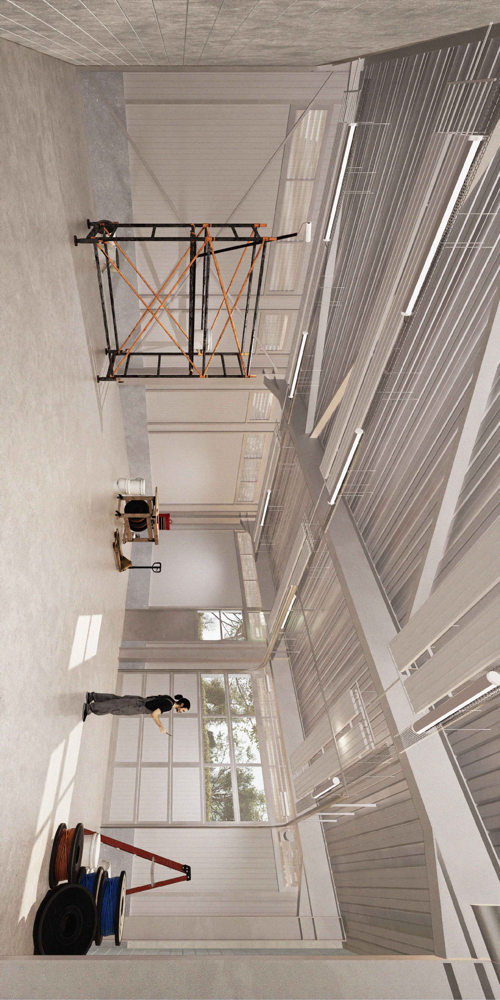
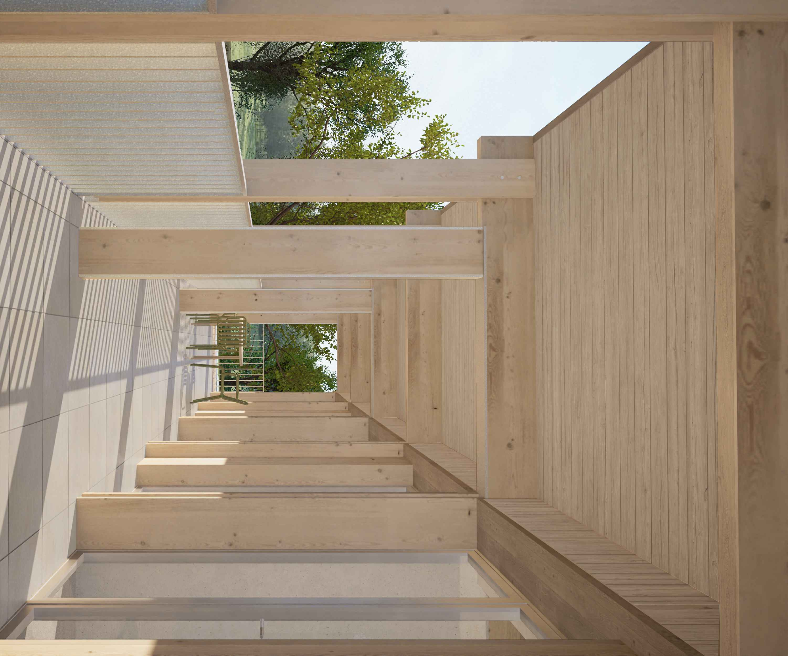
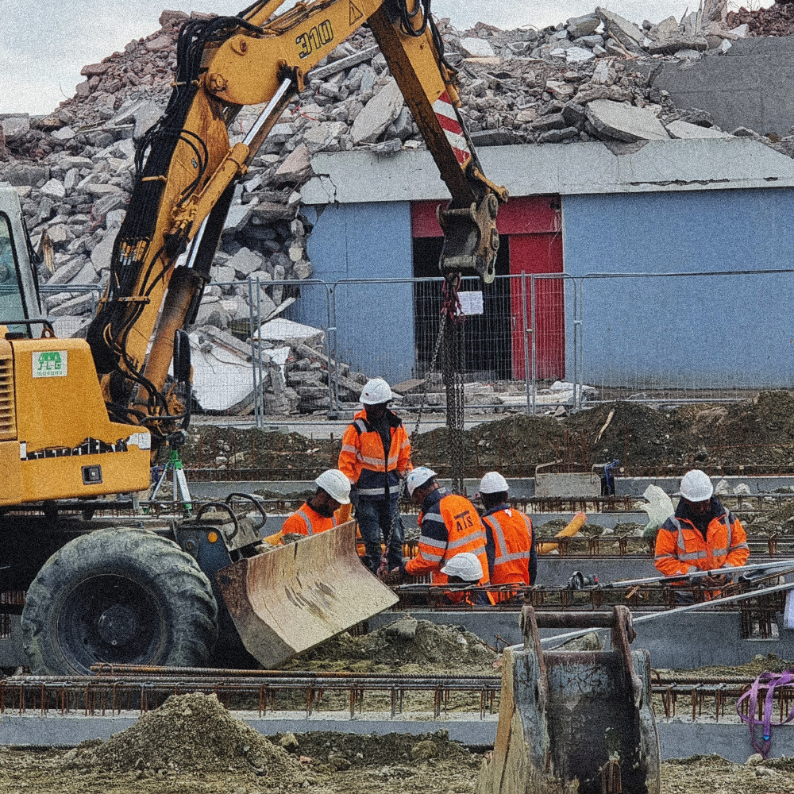
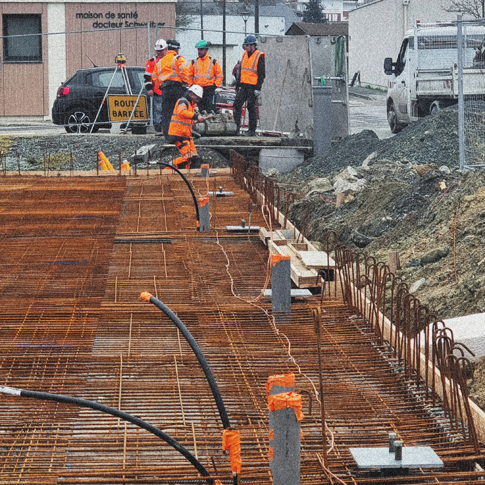


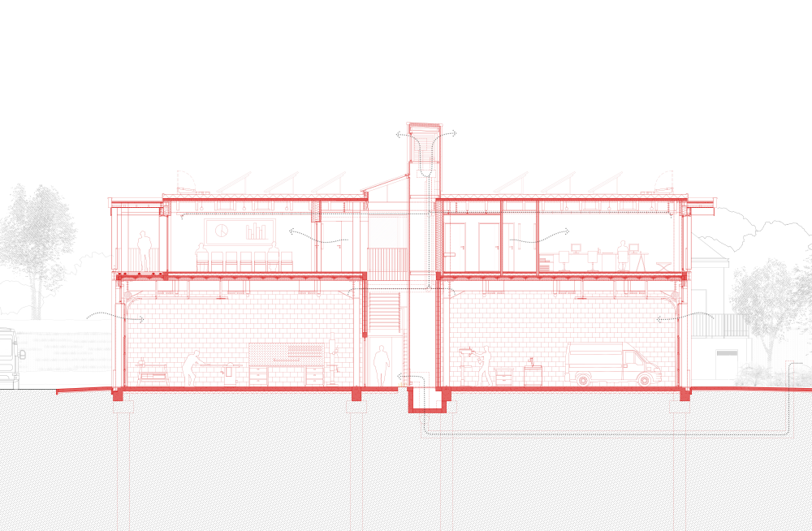